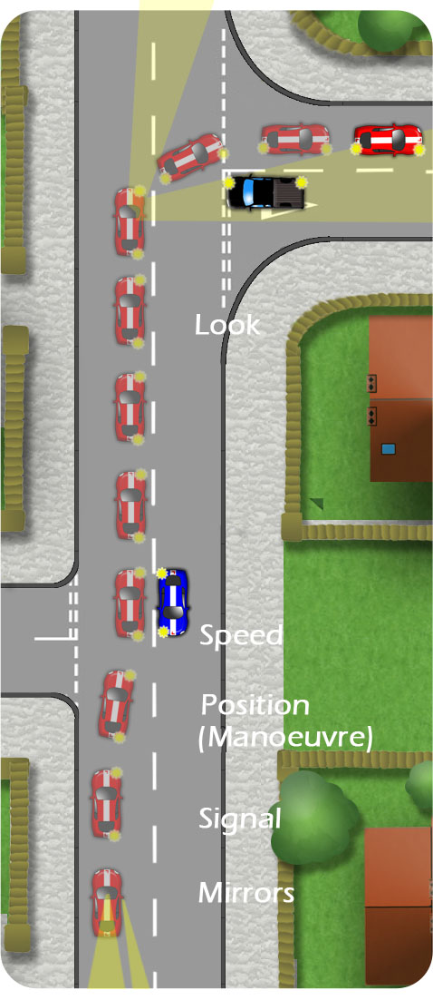

When turning right into a side road, oncoming traffic has priority. Traffic emerging from the side road must wait as you position or pass in front of it:
Approach using the full MSM routine:
Mirrors
Interior and right. Looking for:
- Proximity of following traffic
- Vehicles overtaking
Signal
Nice and early but not misleading. Wait until you’ve passed any prior side roads.
Manoeuvre
- Position-Just left of the centre line so that traffic might beable to pass on the left or use the turning lanecentrally if there is one.
- Speed-Off the gas, gentle brake as required. Clutchdown at two car lengths and change down ingear if needed. Stop or clutch up as you turn.
- Look-Look ahead and into the new road.

To view the typical controls for the illustration above, click Here
Look ahead keeping a keen eye for cyclists and motorbikes which are less visible. Stop if you have any doubts about crossing safely.
Look into the new road for obstructions/pedestrians. Pedestrians waiting to cross or already crossing the mouth of the junction have priority. Don’t start to cross unless the way is clear.
If you need to stop, then keep your wheels straight. If you’re bumped from behind, you wont be pushed into oncoming traffic.
As you wait for a gap in the oncoming traffic, consider using the guideline that if you could walk across, you could drive across.
Don’t begin to turn until your front end is just short of the centre line of the new road. Too early and you’ll cut the corner. You can usually gauge the point to begin steering as you gain a good view into the side road.